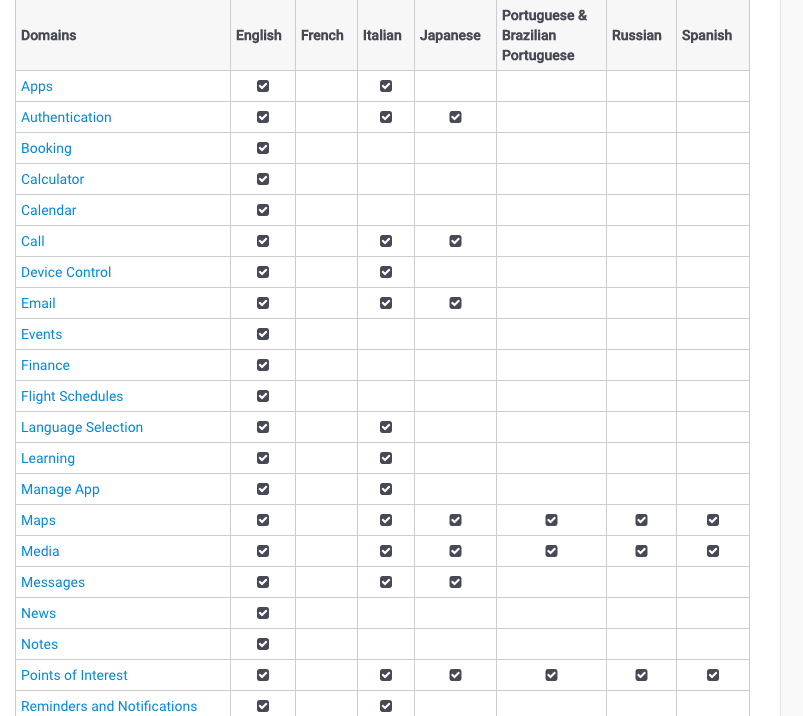
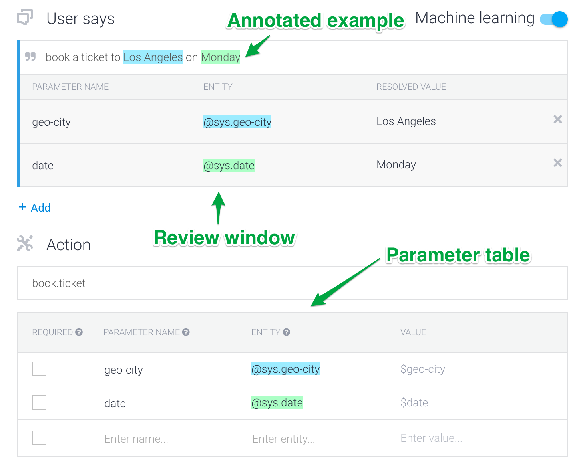
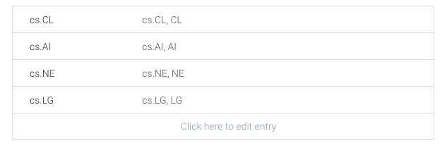
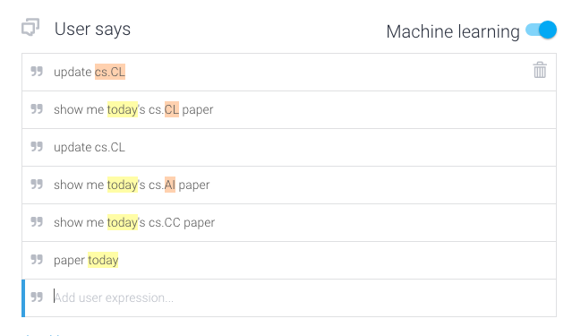
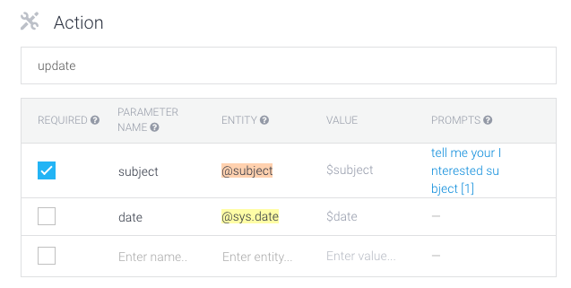
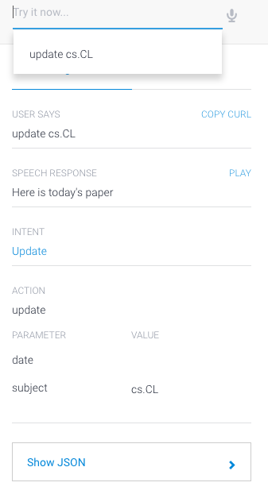
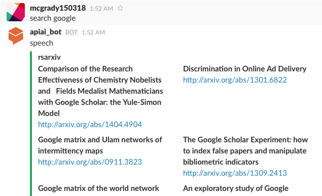
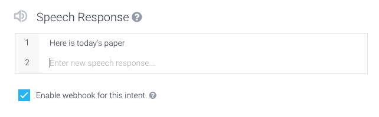

从api.ai工作原理来看构建简单场景chatbot的一般方法
引
chatbot无疑是当前非常火的一个研究领域和产品方向，简单地可以分为两类，开放域bot和封闭域bot，开放域bot倾向于解决所有的事情，而封闭域bot倾向于解决某一个细分领域中的事情，旨在用AI技术提高效率，提高生产力。现阶段的开放域bot我个人感觉更像是多个常用封闭域bot的叠加，当用户发起一个请求，系统会判断出属于哪个细分领域，然后转到相应的程序中去执行并给出反馈，顺着这个逻辑来看，研究简单场景下的chatbot是个重要的基础工作，这类研究或者产品的质量直接决定了复杂场景或者开放域bot的质量。当然逗乐型的bot并不属于本文讨论的范围。
图片来自paper The Dialog State Tracking Challenge Series- A Review
chatbot是场交互革命，也是一个多技术融合的平台。上图给出了构建一个chatbot需要具备的组件，简单地说chatbot = NLU(Natural Language Understanding) + NLG(Natural Language Generation).(本文只关注NLP相关的技术，对语音识别并无讨论)
对于封闭域的chatbot，NLU的工作就是DST(Dialog State Tracker)，用户给出输入之后，系统可以给出下面的形式作为state：
Act(Slot=Value)
Act表示用户行为的类型，比如请求、查询、打招呼等等；Slot表示用户输入中包含的某种Act下的Entity，比如查询酒店的位置、价格这些实体；Value是指Slot中Entity对应的值，比如位置在北边，价格在500-800之间等等。每一句话中可能包括多个Act-Slot-Value对，chatbot需要做的事情就是准确地识别出Act，并且抽取出相应的Slot和Value。
紧接着是NLG的部分，前几天在PaperWeekly第二期中分享了三篇paper，其中两篇正是研究基于DST的NLG问题。
本文首先从api.ai这家企业提供的服务说起，通过研究其提供的封闭域bot构建技术，来提炼构建简单场景chatbot的一般方法，为构建复杂场景或者找出现有chatbot存在的技术问题和面临的技术难点打下基础。
api.ai
api.ai公司介绍
Api.ai provides developers and companies with the advanced tools they need to build conversational user interfaces for apps and hardware devices.
这家公司是一家典型的B2D公司，提供了一些工具帮助开发者轻松地开发一款bot，并且可以轻松地发布到各种message平台上。商业模式也非常简单，免费用户有一定次数的调用权限，需要大量调用的话，则付费购买，不同的权限有不同的价格，该公司也提供高级定制化服务。
api.ai公司成立于2010年（数据来自CrunchBase），其早期业务不清楚，但可以从提供的服务中推断出早期攒了大量的用户数据，而且涉及的领域非常多，比如：

每个领域都有一个知识库，如果你要开发某个常用领域内的chatbot，那么这个知识库将会非常有用。
重要概念和工作原理
重要概念
1、Agents。这个是一个对外接口，与其他应用程序或你的app进行整合的部分。如下图：
2、Entities。这里的实体和引言中提到的Slot类似，是指某个特定领域内的实体，是一类东西的抽象概括，比如HotelName这一实体，对应着很多的酒店名字，凯宾斯基、如家等等。有Entity，就一定有value，chatbot中重要的一步正是从user input中抽取出对应预先设定好entity的value，是一个典型的Named Entity Recognition任务。
这里经典的NER任务是识别出user input中的person、time、place等等几个基本元素，api.ai将这些常见的entity定义为system级的，即默认提供了训练好的识别器，当然不仅仅限于这几类基本的；而特定领域知识库的重要作用也正是在于识别该领域内的entity。除了system level的NER之外，需要developer自定义一些entity，比如菜名，而且要给定具体的菜名和相似的表达作为samples进行训练。
3、Intents。这个相当于是从user input到chatbot执行某个action之间的一个映射关系，用户输入一句话之后，chatbot就可以理解其意图，是在打招呼，还是查询，还是做些别的事情。这部分api.ai提供了训练器，但是需要developer定义一些标注好的examples，标注的形式如下：

这里用户输入是book a ticket to Los Angeles on Monday，所谓标注包括两个level，一个是entity标注，一个是intent标注，前一个是为了训练NER工具，后一个是为了识别intent。这里因为LA是地名，Monday是时间，所以都会被api.ai的系统自动标注出来。
4、Actions。这个是由intents进行trigger的，actions就和引言中的Act类似，是一个具体的动作，比如说查询，但执行动作的时候一般都要带上具体的参数value，用户输入：“三里屯最近的阿迪达斯店在什么位置？”，chatbot首先会提取出place->三里屯，query->阿迪达斯店，然后转换为json丢给后台的查询服务，查询到结果后给出答案。这里的value抽取其实就是第二个概念提到的entity value。
5、Contexts。上下文是一个非常重要但却解决不是很好的点，api.ai提供的方式是自定义一些context condition，当condition满足时，自动trigger出context关联内容template，然后filling slots，生成response。
工作原理
以RSarXiv chatbot为例，简单介绍下工作原理。
（注：RSarXiv是我之前写的一个arxiv paper推荐系统）
step 1 自定义Entity，这里我定义了两个entities，一个是keywords和subject。keywords是为search功能提供value，而subject是为update new papers功能提供value。

定义好subject entity之后，我给出了几个examples，同时也包括其synonyms，keywords entity类似。
step 2 自定义Intents，这里我定义了两个Intents，分别是update和search。下图是update的examples，是我自定义的几个例子。api.ai会根据我定义好的entity进行自动标注，比如cs.CL，today是系统默认的entity所以也进行了自动标注。自动标注是为了后台的机器学习算法对标注好的examples进行学习，以提高chatbot的NLU准确率。

接下来，我需要定义下Actions，如下图：

Action被称为update，必须包含的参数是subject，也就是我们上面讲到的一个entity，date参数并不是必须的。所以，这里如果用户的input被识别出是update intents的话，就必须包括subject参数，否则chatbot会trigger一个response，类似“请用户输入subject”这样的话。
step 3 简单测试，在界面的右侧有一个console，用来测试当前chatbot的效果，我输入update cs.CL，得到下面的效果：

chatbot识别出Intent是Update，Action是update，Parameter是date和subject，并且subject的值是cs.CL，下面的Show JSON是api.ai为developer生成的，用来与developer自己的web service进行数据交换。
step 4 训练。训练包括两个部分，一是训练NER，二是训练Intent Classification。训练器是api.ai提供的，但是标注数据是developer自己提供的，当然训练数据越多，标注越准，分类器的准确率就越高，chatbot的NLU准确率越高。至于训练方法，docs中没有细说，我简单猜测一下，NER可以当做Sequence Labeling任务，和Intent Recognition类似，都可以看作是多分类问题，不管是传统的分类方法还是当下流行的deep learning方法都能得到不错的准确率。随着user logs的增多，训练数据会越来越多，chatbot通过学习就会变得越来越“聪明”。但这里有个问题，training data越多，需要标注或者修改标注的数据就会越多，也是一个麻烦事儿。
step 5 整合、发布。api.ai支持的平台非常多，包括当下流行的message平台，还有各种操作系统平台。在message平台上提供了一键整合的功能，在操作系统上提供了SDK。这里我用了slack平台，api.ai打通了和slack的接口，也提供了webhook，连接了我之前写好的web service，只需要按照它给定的消息接口进行定义即可。
demo
目前RSarXiv只提供两个简单的功能，一个是update今天最新的arxiv paper，你可以通过show me new papers in cs.CL等类似的话来获取cs.CL这个领域中最新的paper；一个是search功能，你可以通过search LSTM等类似的话来获取包括LSTM这个关键词的paper。由于是一个测试用的demo，就没做什么复杂的功能。

大家如果感兴趣的话，可以留言给我或者发邮件给我(mcgrady150318@gmail.com/mcgrady150318@163.com)，我邀请大家到这个slack team中。
简单场景chatbot构建方法
介绍了下api.ai提供的服务，下面简单地提炼一下。
chatbot = NLU + NLG
api.ai解决的重点问题是NLU的问题，NLU也是Dialogue State Tracker(DST)的核心和基础，而DST是chatbot的核心。这里的NLU包括两个问题：
1、从user inputs中识别出user intent和对应的action。
2、从user inputs中抽取出预先设定好的entity value，作为action的parameter。
NLG在api.ai这里基本上通过developer在Intent中设定response，当识别出是哪个intent之后，response自然就有了，最多空一些slot，用结果进行填充。如果developer选择了webhook，即需要从自定义的web service中给定response。如下图：

跑了一个简单场景的chatbot demo之后，简单归纳下构建方法：
1、从特定任务中归纳出Intents、Actions、Entities。
2、分别编写Intents、Entities的examples，两类examples是做DST的基础，用来训练chatbot准确地识别user intents和entity parameters，至于算法，自己写也可以，用api.ai也可以。
3、做好DST之后，chatbot就知道用户的意图和相应的参数，丢给后台的web service去执行，并得到执行的结果，然后填充预先定义好的templates，生成response，返回给用户。
结束语
简单场景的chatbot关键之处在于做好DST，有一个叫Dialogue State Tracking Challenge的比赛正式为了解决这个问题而举办的。我们说，封闭域的chatbot涉及两个方面，一是NLU，一是NLG，前者通过大量的examples来学习一个分类器和抽取器，得到Dialogue State，而后者根据Dialogue State，生成合适的response。
NLU不是一个简单的事情，尤其是标注大量的examples不是那么容易；NLG同样也不是一个好解决的问题，预先定义的template会让chatbot受限制于template的多少，手工痕迹太重，需要一种更牛的解决方案来代替。（其实挺多paper都在做这件事情，PaperWeekly也分享过几篇相关的paper，data driven的NLG方案同样需要大量的examples做训练。）
Context是个挺难的事情，现有的、成熟的解决方案仍是手工来定义条件，然后根据条件来trigger。我在想，能否构建一个动态的DST，可以是一张动态hash table，也可以是一个动态graph，记录着某一个user方方面面的状态，而不仅仅是某一轮对话中抽取出的信息，而是多轮对话中的信息，不仅在intent识别中可以用到context，在生成response时也可以用到，多轮对话和个性化对话都将不是什么问题了。或者，用现在流行的表示学习思维来想这个问题的话，也许context可以是一个分布式表示，user profile也是一个表示，NLG时以context distribution为condition来做generatation。
本文介绍了构建简单场景下chatbot的一般方法，用api.ai确实很容易做一个chatbot，而对于复杂场景，我觉得用api.ai来开发也没有太大问题，最费时的可能是构建context trigger。api.ai因为是面向developer的，所以对于普通的用户并不适合，但对于有一定经验的developer来说，使用起来就非常简单，提供的web界面也很好用，如果说chatbot是一个平台的话，那么api.ai正像是一个开发工具，提高了开发chatbot的效率，虽然NLG和context这两个问题可以做的更好，但整体来说降低了开发chatbot的门槛，是个很有意义和钱景的服务。
PaperWeekly招人广告
PaperWeekly每周会分享N篇当下最流行、最有趣的NLP paper，旨在用最精炼的话说明白paper的贡献和创新。目前运营在公众号和知乎专栏两个平台上，现在的形式是每周分享一篇NLP Paper周报，偶尔也会写一些NLP相关的博客，由于本人精力和水平有限，现邀请各位对NLP技术、NLP Paper感兴趣的童鞋加入一同运营，在推进国内NLP技术发展的路上贡献一份自己的力量。
微信公众号：PaperWeekly

知乎专栏：PaperWeekly
微信交流群：
群已满100人，无法扫码加群，大家加zhangjun168305，我拉大家入群。